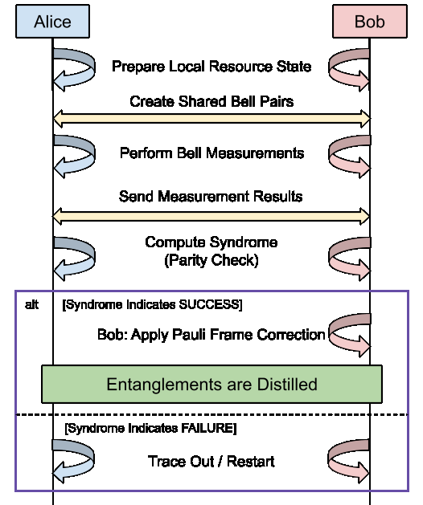
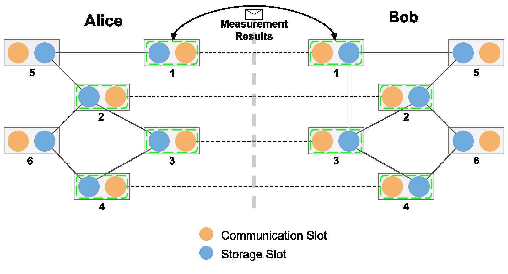

MBQC-Based Entanglement Purification
This How-To runs the measurement-based quantum computing (MBQC) purification example from the QuantumSavory paper. The protocol is from "Measurement-Based Entanglement Distillation and Constant-Rate Quantum Repeaters over Arbitrary Distances".
The full source is in examples/purificationMBQC.
Model
The protocol uses a [[n,k,d]] CSS code. Alice and Bob each prepare the local resource state
\[\frac{1}{\sqrt{2^k}}\bigotimes_{j=1}^{k} \left(|\bar{0}_j\rangle|0_{n+j}\rangle + |\bar{1}_j\rangle|1_{n+j}\rangle\right).\]
Here, $|\bar{0}_j\rangle$ and $|\bar{1}_j\rangle$ are the encoded basis states of logical qubit $j$. The last $k$ physical qubits hold the outputs. The protocol consumes n noisy Bell pairs and keeps k pairs when the syndrome check passes.
The example uses the [[4,2,2]] code. Each side has six nodes: the first four hold the code qubits and the last two hold the outputs. Every node has two slots: a communication qubit for entanglement generation and a storage qubit for the resource state.
Workflow At A Glance
Alice and Bob first prepare their local resource states. They then create four shared noisy Bell pairs and measure each pair together with the matching resource-state qubit. Both sides exchange their measurement results and use them to compute the syndrome. A zero syndrome keeps the two output pairs, and Bob applies the required Pauli-frame correction. A nonzero syndrome discards the attempt so the protocol can start again.

The diagram below shows the physical layout for the [[4,2,2]] example. Orange circles are communication slots, and blue circles are storage slots. Solid lines show each local resource state. Dotted lines show the four noisy Bell pairs shared by Alice and Bob. Each green box marks a Bell measurement between a communication slot and its local storage slot. Nodes 5 and 6 hold the two output pairs when purification succeeds.

Protocol
- Prepare the resource states. QuantumClifford maps the stabilizer resource state to a graph state and local Clifford corrections.
graph_buildergroups graph edges that do not share a node.GraphStateConstructorcreates each group in parallel and usesFusionto move it into storage. Alice and Bob run this process independently.GraphToResourcethen applies the local corrections. - Generate the noisy pairs.
EntanglerProtcreates four noisy Bell pairs between matching Alice and Bob communication qubits. - Measure the pairs.
PurifierBellMeasurementsBell-measures each noisy pair half with its resource-state qubit. It packs theXXandZZoutcomes into two integers, stores the local result as a tag, and sends the same result to the other side. - Check the syndrome.
MBQCPurificationTrackerwaits for the local tag and the remote message. It combines the outcomes and computes the CSS syndrome. A zero syndrome is accepted. Bob applies the Pauli X/Z corrections, and both sides mark the two outputs withPurifiedEntanglementCounterpart. On failure, both sides discard the qubits used by that attempt.
These steps are separate resumable processes. They coordinate through tags and messages instead of direct references to each other. This lets the example combine multipartite graph-state preparation with asynchronous classical control.
Run The Example
From the repository root, run:
julia --project=examples examples/purificationMBQC/full_purification_example.jlThe script first uses perfect input pairs and checks that both output pairs have fidelity one. It then sweeps over Werner-state input fidelities. For each value, it records the acceptance rate and the mean output fidelity conditioned on acceptance.
Run the plot script with:
julia --project=examples examples/purificationMBQC/plots.jlIt compares the simulated acceptance rate with $P_\mathrm{accept}=(1+3p^4)/4$, where $p=(4F-1)/3$, and plots the output fidelity.
Current Assumptions
The example uses noiseless storage, a pair-generation success probability of one, and Werner-state noise on the shared input pairs. Its ordering of local resource preparation and long-range pair generation is only one possible choice.
The current tracker expects consecutive node numbers on each side, with the chief node first and matching layouts. Measurement outcomes are packed into an Int64, so n must be at most 63. The shipped [[4,2,2]] resource conversion needs only Hadamard corrections. GraphToResource currently errors if the graph conversion requests inverse-phase or Z corrections.